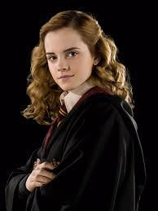

A Ministra da Magia Hermione Jean Granger, nascida em 19 de setembro de 1979, é uma bruxa inglesa nascida trouxa e a única filha do Sr. e da Sra. Granger. Aos onze anos de idade, quando aprendeu sobre sua natureza mágica, Hermione foi aceita na Escola de Magia e Bruxaria de Hogwarts. Ela iniciou seus estudos em 1991 e foi classificada para a Casa Grifinória. Hermione possuía uma mente acadêmica brilhante e se provou uma estudante talentosa em quase todas as matérias que estudou, a ponto de ser considerada à Casa Corvinal quando classificada pelo Chapéu Seletor. No entanto, sua disposição cética e lógica foi uma das características que o fez mudar de ideia.
A bordo do Expresso de Hogwarts, Hermione conhece Harry Potter e Rony Weasley, dois jovens da mesma idade que ela que viriam a se tornar, eventualmente, seus melhores amigos — inicialmente eles a julgaram como uma "irritante sabe-tudo", uma impressão que foi ainda mais reforçada quando a garota proferia uma série de respostas corretas e sempre possuía a necessidade de agradar seus professores —. No entanto, quando o recém formado trio foi colocado em perigo no dia das bruxas de 1991, Hermione assumiu toda a culpa pelo evento, surpreendendo Harry e Rony, que haviam salvado a garota de um trasgo montanhês adulto; após o ocorrido, eles se tornaram inseparáveis. Mais tarde, ela desempenhou um papel crucial na proteção da Pedra Filosofal de Lorde Voldemort.
Em seu segundo ano letivo, Hermione também possuiu um papel fundamental na descoberta da Câmara Secreta, antes de ser uma das vítimas do basilisco desencadeado sob Hogwarts após a abertura da Câmara. Ela, no entanto, se recuperou de sua petrificação estando sob os cuidados de Madame Pomfrey. No ano seguinte, Hermione recebeu a permissão do Ministério da Magia para utilizar um vira tempo e facilitar sua vontade em estudar as matérias que mais almejava — entretanto, a garota utilizou do artefato para voltar no tempo ao lado de Harry Potter e salvar Sirius Black e Bicuço, o hipogrifo.
Já em seu quarto ano, Hermione tornou-se a defensora do melhor tratamento para os elfos domésticos, instituindo a associação FALE, e ajudou Harry em sua preparação para o Torneio Tribruxo. No ano letivo de 1995–1996, Hermione fundou e integrou a Armada de Dumbledore e lutou ao lado de vários membros da organização durante a Batalha do Departamento de Mistérios. Em seu sexto ano, Hermione continuou seu papel como monitora e lutou em meio à Batalha da Torre de Astronomia.
Ela também desempenhou um papel significativo em várias outras batalhas da Segunda Guerra Bruxa. Em 1997, lutou durante a Batalha dos Sete Potter, ao lado da Ordem da Fênix. Junto de Rony, Hermione decidiu não retornar a Hogwarts para concluir seu último ano letivo, preferindo acompanhar Harry em sua busca pelas Horcruxes de Lorde Voldemort. Ela acabou sendo a responsável por destruir uma delas, a taça de Helga Hufflepuff. Eventualmente, ela lutou durante a Batalha de Hogwarts, garantindo a derrota da Comensal da Morte Belatriz Lestrange.
Após a Segunda Guerra Bruxa, ela retornou a escola para terminar seu último ano letivo. Mais tarde, ela ingressou no Ministério da Magia, provendo uma série de melhorias ao tratamento dos elfos domésticos. Depois, Hermione foi promovida ao Departamento de Execução das Leis da Magia, onde se dedicou a erradicar leis antigas que favoreciam bruxos sangues puros. Eventualmente, ela se casou com Rony Weasley e juntos eles tiveram dois filhos, Rosa e Hugo. Hermione também é a madrinha do filho mais velho de Harry e Gina Potter e, já no ano de 2019, ela veio a se tornar Ministra da Magia.
voltar